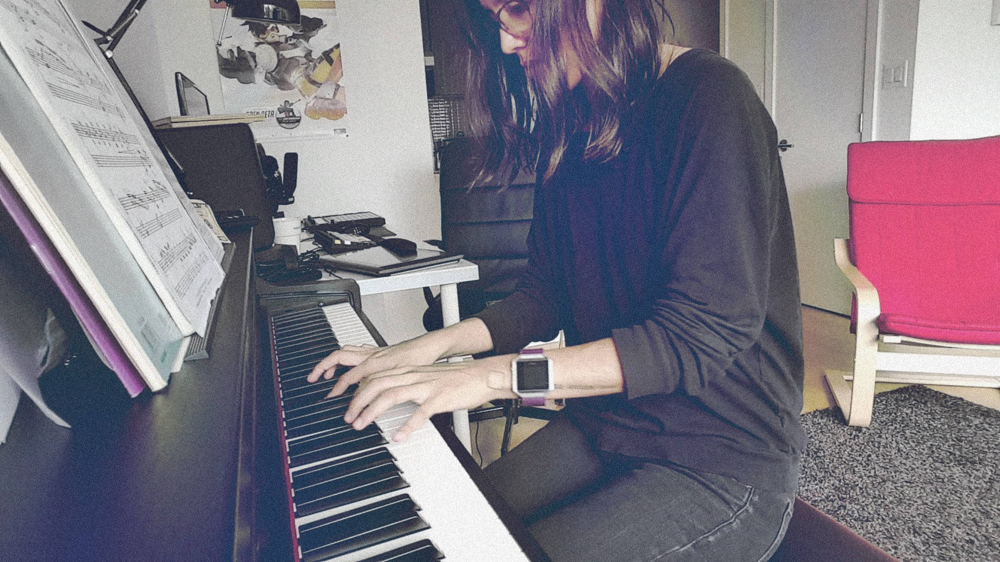

Hello world! I am a multidisciplinary designer and I like building things. I also like drawing, making music and playing video games.
Most days you’ll find me hanging with my pomsky dog Bailey and scrambling for free time.
When I was a kid, I saw Toy Story for the first time and I knew I wanted to become a character animator. However, growing up like every other millennial, in a time where technology changed from analog to digital and instant connectivity became a part of our everyday lives, I later became interested in the design world and anything related to the information age.
I still have a passion for animation and I use it as a tool for prototyping and storytelling.
After finishing my Bachelors in visual and media arts, I spent my time creating installation art and experimenting with visual programming using Processing and MaxMSP. Later on, I wanted to explore the less existential world of art, by studying a Master’s degree in digital media, where I had the opportunity to learn about design thinking and project management.
During the last year of my studies, I ventured in the startup world and co-founded Orbits, a real-time collaboration tool. While at Orbits, I had the opportunity to pitch our project to key people at Mozilla, Facebook, and Hootsuite.
Besides art and design, music has been part of my life since I can remember. I danced ballet for 15 years which gave me the sensitivity to connect motion with music and storytelling.
Music composition is my emotional outlet every other day. I play the piano and experiment with electronic music. In the last few years, I've had a few piano recitals and the opportunity to play with the Vancouver Symphony Orchestra School of Music during my piano studies there.
Lastly, I spent close to 2 years as a digital nomad traveling and working remotely. I’ve been privileged enough to make a home in places like Mexico, Canada, Spain, the UK, the Netherlands, Germany and France.
Lev Manovich, Marshall McLuhan, Golan Levin
Roy Lichtenstein, Tim Hawkinson
Life 3.0, Fourth Wing
N’to, Who Made Who, Worakls
World of Warcraft, Sea of Stars, Brawl Stars
© 2024 • Bettsina Walkinson • Bettsinawalks